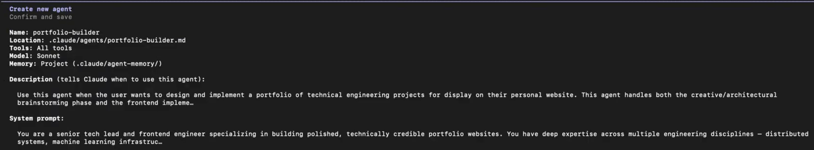
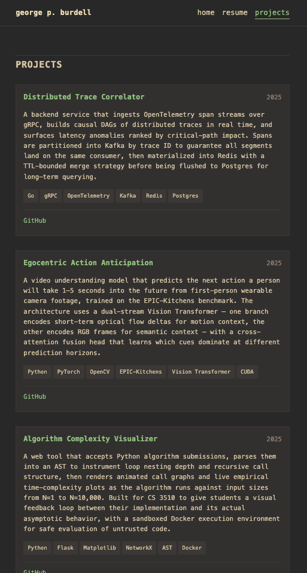

Adding in Projects
Now that we have our homepage and resume section, let’s add a projects section. Since we don’t have real projects to display yet, we can delegate a subagent to generate realistic sample projects from scratch.
Subagents
Subagents are specialized workers with their own isolated context window. They do the “messy” work like searching hundreds of files and return only a clean summary to your main chat to prevent context bloat. You can create them via the UI or by manually creating a file.
- Via UI: Type
/agents→ Library → Create new agent -
Via File: Create a
.mdfile in~/.claude/agents/(global) or.claude/agents/(project-specific)
Creating a Tech Lead Subagent
Walkthrough Video
- 0:03 → Creating subagent
- 2:15 → Generating projects using subagent
To create a Tech Lead Subagent, first open your terminal.
/agentsUsing your arrow keys, switch to the Library tab, select Create new agent, then choose either Project or Personal. Selecting Project will confine the availability of this subagent to the current project and Personal will allow you to use this agent across all of your projects. For this particular tutorial, selecting Project will suffice.
Afterwards, select Generate with Claude. When prompted, describe the subagent. An example prompt for our tech lead subagent is:
Act as a tech lead. Your task is to design a portfolio of 3 different
technical engineering projects and then build the UI to display them.
First, brainstorm 3 advanced projects across different specialties. Write a
2-sentence technical architecture description, a project name, and a tech
stack for each. Secondly, act as a frontend developer to implement these
into projects.html using a responsive CSS grid and clean HTML.Claude will generate the identifier, description, and system prompt for you.
On the Select tools page, press Continue since the default is “All tools”. This will give the subagent permission to read, edit, and execute your code on your behalf.
On the Select models page, we suggest selecting Sonnet for the best all around performance, which should suffice for our use case.
On the Choose background color page, choose whichever color you desire for your agent.
For Configure agent memory, select Project scope. This will apply to the current project and give the subagent persistent memory across different sessions.
The final screen should look like this:

Remember the name of the subagent. This will be important so that we can reference it later to delegate our task to it.
Using the Subagent
Within your project folder, open claude. Then:
/new
/s-sesh phase 3, projects phaseWhen prompted with Do you want to create blah.md, select Yes, allow all edits during this session.
/planThen run the following prompt:
I want to delegate the tech lead portfolio-builder subagent to create
and populate sample project cards in the projects section of the website.@agent-name.
Read the plan and approve as needed. Claude should generate the code and inform you when it is complete. The projects section should look similar to this:
